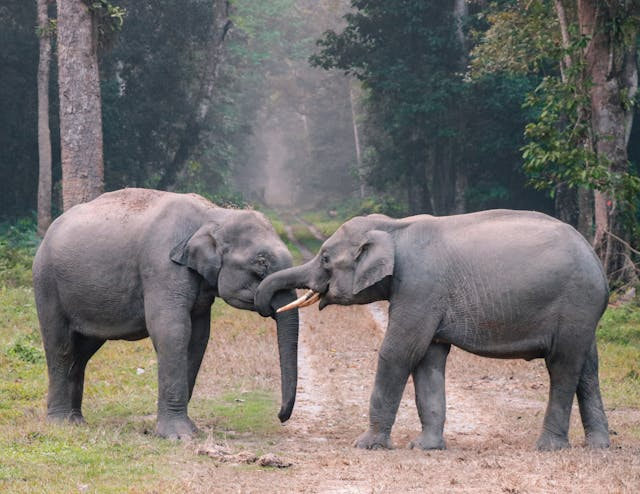
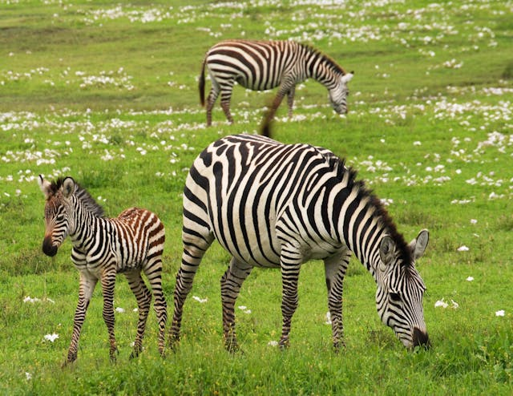
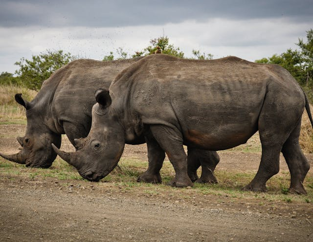

La tigre è un mammifero carnivoro della famiglia dei felidi. È il più grande dei cosiddetti "grandi felini" che costituiscono il genere Panthera. È un cosiddetto predatore alfa, ovvero si colloca all'apice della catena alimentare, non avendo predatori in natura, a parte l'uomo.
Il corpo della Tigre del Bengala può raggiungere, nel maschio la lunghezza di 2.70 m fino a 3.10 metri, coda compresa. Il peso può variare dai 180 ai 260 kg. Ha un caratteristico mantello color bianco/crema, adornato da strisce nere, grigie o color cioccolato.
I coccodrilli sono un ordine di sauropsidi diapsidi. A causa della forte armatura squamosa di cui sono dotati questi animali hanno anche il nome di Loricati. Questi potenti animali, e gli uccelli, sono gli unici arcosauri viventi.
È uno degli animali più longevi: in media vive 70-80 anni, ma alcuni esemplari arrivano anche a 100 anni. Il coccodrillo è un grande nuotatore e trascorre molto tempo in acqua. Può comunque muoversi sulla terra ferma per lunghi tratti, strisciando sul ventre e sostenendosi sulle zampe robuste.
La giraffa è un genere di mammifero artiodattilo. Originaria dell'Africa, è il più alto animale terrestre, nonché il più grande ruminante esistente. Tradizionalmente il genere contiene una singola specie, Giraffa camelopardalis L., con nove sottospecie.
Inconfondibile con il suo lungo collo e le zampe altissime, la giraffa è il più grande animale ruminante e il più alto mammifero vivente. I maschi possono raggiungere i 6 metri e mezzo di altezza. È in grado di raggiungere le foglie di cui si nutre a oltre 2 metri di altezza, irraggiungibili dagli altri erbivori.
l leopardo è una specie di felide della sottofamiglia dei panterini. In passato era noto anche con il nome di pardo o, soprattutto per quanto riguarda la popolazione asiatica, pantera.
Il leopardo è un animale solitario della boscaglia e della foresta, prevalentemente notturno, anche se a volte si crogiola al sole. È un agile arrampicatore e spesso immagazzina i resti delle sue prede tra i rami di un albero. Il leopardo è carnivoro. Si nutre di tutti gli animali che riesce a prendere.
Il leone bianco è un leone la cui rara colorazione è un caso di polimorfismo genetico legato ad una condizione di leucismo, che causa una colorazione pallida e simile a quella delle tigri bianche. La condizione è simile, anche se con effetti opposti, al melanismo tipico della pantera nera.
Il leone bianco deve il suo manto alla presenza di un gene recessivo. Si tratta di una forma piuttosto rara della sottospecie Panthera leo krugeri. Sebbene siano rari, i leoni bianchi si incontrano occasionalmente a Timbavati, in Sudafrica. Il loro insolito colore è dovuto alla presenza di un gene recessivo.

Il Pitone reale albino è una specie di serpente che presenta una mutazione genetica che causa una mancanza di pigmentazione nella pelle e negli occhi, conferendo loro una tonalità biancastra. Questo serpente richiede cure e pulizia specifiche per garantirne la salute e il benessere.

Il rinoceronte bianco, detto anche rinoceronte camuso, è la più grande specie esistente di rinoceronte. La parola white, bianco, usata per indicare il rinoceronte camuso, deriva dalla parola afrikaans wyd, che significa largo, in inglese wide, e non bianco.
Il rinoceronte bianco del Sud è il più grande, ha la testa allungata e un labbro superiore squadrato adatto a pascolare l'erba. È la specie meno minacciata con circa 16.000 esemplari allo stato selvatico, di cui il 93% in Sud Africa. Il rinoceronte bianco del Nord è purtroppo estinto in natura dal 2018.
Imantello completamente bianco, in cui la coda del maschio assomiglia a uno splendido pizzo. Punto debole di questa varietà è l'eccessiva consanguineità, che la rende sensibile alle malattie e al clima instabile.
DOVE TROVARLI
La Savana si trova in Africa, nelle Americhe, in Asia e in Australia. Guarda la cartina qui sotto. Nella savana crescono delle piante che possono resistere anche per molti mesi senza acqua. Per esempio il Baobab che può contenere nel suo tronco molta acqua per resistere durante la stagione secca.
La Foresta amazzonica, che ricopre la maggior parte del nord-ovest del Brasile e si estende sul territorio della Colombia, del Perù e di altri paesi del Sud America, è la più grande foreste pluviale del pianeta ed è famosa per la sua biodiversità. La attraversano migliaia di fiumi, tra cui l'immenso Rio delle Amazzoni. Le città brasiliane Manaus e Belém e peruviane Iquitos e Puerto Maldonado sono tra quelle sorte lungo i fiumi e sono caratterizzate dall'architettura del XIX secolo, periodo del massimo sviluppo dell'industria del caucciù.
Le savane tropicali e subtropicali sono determinate principalmente dalla scarsità e marcata stagionalità delle precipitazioni. Precipitazioni inferiori ai 1000–2000 mm all'anno sono infatti insufficienti allo sviluppo di alberi e arbusti, e determinano regioni di sola prateria erbosa, quali si trovano tipicamente ai margini dei deserti subtropicali. Spostandosi gradualmente verso latitudini più piovose, ovvero verso l'equatore, si osserva prima la comparsa di vegetazione arbustiva (fino a 3000 mm) e poi di alberi isolati (fra i 3000 mm e i 4000 mm).
Nell’Asia tropicale si hanno i monsoni che portano piogge e umidità e quindi incontriamo, oltre alle savane, anche boschi e foreste “chiare”, cioè con alberi caducifogli, e meno lussureggianti delle giungle pluviali. In India e Indocina, queste zone sono abitate da grandi erbivori come cervi, elefanti, gaur e banteng e da predatori di grande mole come tigri, leopardi, cuon e lupi.
La savana è un ambiente caratterizzato da molta vegetazione e una minoranza di alberi, come ad esempio i baobab e le acacie, che hanno radici lunghe fino a 50 metri sotto il livello del suolo, in modo da resistere alla forza elevata del vento. Le savane più famose sono quelle sudamericane e australiane, che si trovano in corrispondenza del tropico del Capricorno, mentre invece la savana africana si estende tra i due tropici.